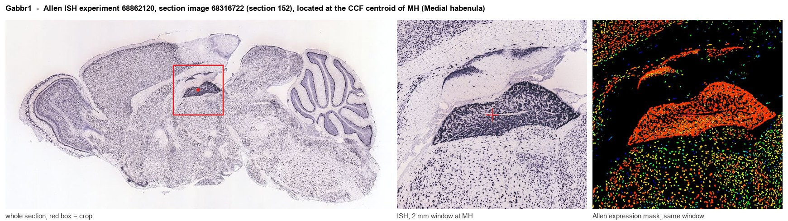

Gabbr1
Gamma-aminobutyric acid type B receptor subunit 1 (GABA-B receptor 1) (GABA-B-R1) (GABA-BR1) (GABABR1) (Gb1)
Spatial tier: STRICT_EXCLUSIVE · Class: GPCR · Top region: MH (Medial habenula) · Positive regions: 2/554
41.8Discovery Score
39.9Targetability Score
CEvidence grade C
What this means: Gabbr1: predicted fine-region profile is strict-exclusive, with 2 positive regions out of 554 (limit 12); direct spatial validation is required.
Function in MH: evidence, prediction, innovation
- Gene function
- GABBR1 encodes the GABA-B1 subunit, the ligand-binding half of the metabotropic GABA-B receptor; it must heterodimerise with GABA-B2 to reach the surface and signal. The dimer couples to Gi/o, normally inhibiting adenylyl cyclase, opening GIRK channels and closing presynaptic Ca2+ channels, and its properties are further shaped by KCTD auxiliary subunits.
- Region function
- The medial habenula is an epithalamic relay whose cholinergic/substance P neurons project almost exclusively through the fasciculus retroflexus to the interpeduncular nucleus. This MHb-IPN axis sets nicotine aversion and withdrawal, fear memory expression, anxiety and negative affect.
- Published in this region
- direct Zhang et al. 2016 (Cell) showed that in habenular cholinergic neurons GABA-B receptors are presynaptically excitatory: baclofen potentiates glutamate release at MHb-IPN terminals and this excitation controls fear memory expression. Bhandari et al. 2021 (eLife) showed that GABA-B receptors and their KCTD auxiliary subunits modulate Cav2.3 R-type calcium channel-mediated release specifically at MHb terminals, and Koppensteiner et al. 2024 (PNAS) showed GABA-B receptors induce phasic release from MHb terminals by recruiting release-ready vesicles.
- Predicted function
- Prediction: GABA-B1 at MHb terminals is the switch that converts an ordinarily inhibitory receptor into a facilitator of transmitter release, so conditional Gabbr1 deletion in MHb should abolish baclofen-induced potentiation of MHb-IPN transmission and impair fear memory expression without changing basal release. Systemic baclofen effects on fear and on nicotine withdrawal should be partly occluded in these mice.
- Innovation
- ★☆☆☆☆ 1/5 Excitatory presynaptic GABA-B signalling in MHb is a well-known and repeatedly replicated phenomenon.
- Tools
- Floxed Gabbr1 mice from the Bettler laboratory combined with ChAT-Cre; agonist baclofen; antagonists CGP54626 and CGP55845; positive allosteric modulators (GS39783, rac-BHFF); validated guinea-pig anti-GABA-B1 antibodies.
- References
Direct evidence located at the region

Allen ISH experiment 68862120, section image 68316722 (section 152): the section that contains the CCF centroid of Medial habenula according to the Allen image-to-atlas alignment (reference_to_image), with a 2 mm window around that point. Left: whole section, red box = window. Middle: ISH signal. Right: Allen's expression-mask view of the same window. open this image in the Allen viewer
Look it up yourself: Allen Mouse Brain ISH for Gabbr1Allen reference atlas: MH (structure 483)ABC Atlas MERFISH viewer(in the ABC Atlas choose dataset MERFISH-C57BL6J-638850-CCF, colour cells by gene "Gabbr1" or by parcellation_substructure "MH")All genes confined to MH + 3-D brain
Direct spatial evidence
MERFISH REGION LOCATOR

DIRECT ALLEN ISH

DIRECT ALLEN ISH

Regional expression figure

Predicted WMB × fine-CCF profile; not direct full-transcriptome spatial measurement.
Spatial profile
Evidence and specificity
- Evidence status
- PREDICTED_FINE
- Direct sources
- None; predicted localization only
- Exclusive threshold
- 12 positive regions out of 554
- Spatial specificity
- 0.281
- Top-region fraction
- 0.095
- Filter status
- PASS
Interpretation limits
- Cell-type-to-region projection is imputed expression, not direct spatial measurement.
- Adult reference atlases do not establish stability across age, sex, strain, state, or disease.
- Transcript abundance does not guarantee protein abundance or genetic-tool performance.